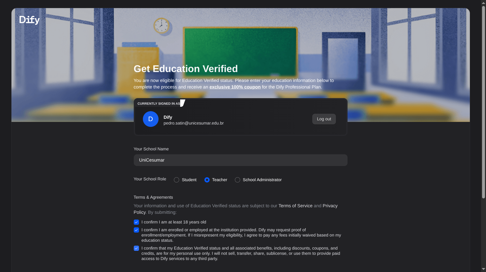
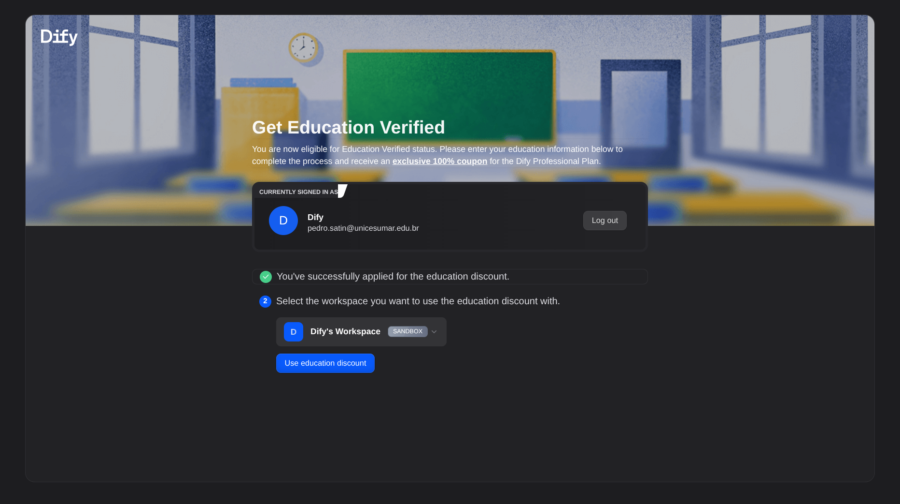
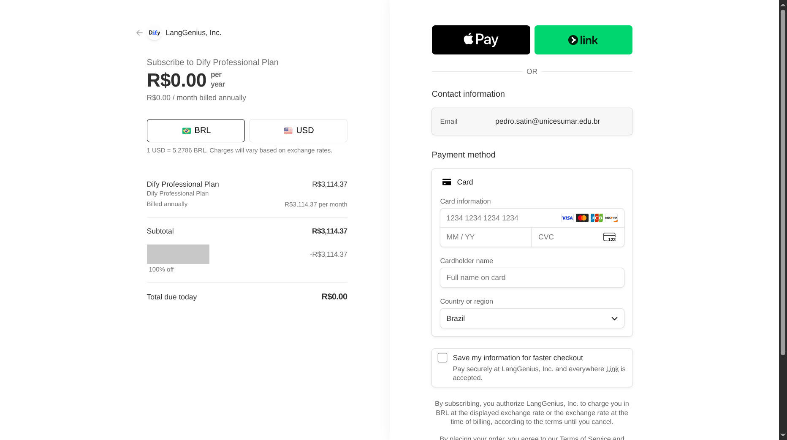

O que a verificação muda
O Dify oferece um ano do plano Professional com desconto de 100% para estudantes elegíveis. Primeiro, ele confere seu e-mail e os dados da instituição. Depois, você precisa concluir a ativação da etapa 6.
Os créditos para consultar a IA continuam iguais aos do plano gratuito. São 200 no total, sem reposição mensal. O benefício amplia outros limites, como a quantidade de apps.
Comparar o plano gratuito e o benefício de estudante
| Item | Sandbox, gratuito | Education |
|---|---|---|
| Créditos de modelo | 200, uma vez | 200, uma vez |
| Apps no seu espaço de trabalho | 5 | Limite do plano Professional |
| Pessoas no seu espaço de trabalho | 1 | Limite do plano Professional |
| Duração | Sem prazo | Um ano, com nova verificação anual |
No teste da A8, cada consulta ao gpt-4o-mini consumiu 1 crédito. O fluxo completo faz três consultas. Se parar com dúvidas, faz apenas uma.
Passo a passo
1. Conta com o e-mail institucional
Entre em cloud.dify.ai com seu e-mail da UniCesumar. Para alunos, ele termina em @aluno.unicesumar.edu.br.
O benefício usa o e-mail cadastrado na conta. E-mails pessoais, como Gmail e Outlook, não são aceitos. Se você entrou com um e-mail pessoal, crie outra conta com o institucional para pedir o benefício.
2. Abrir as configurações
No canto superior esquerdo, clique no nome do seu espaço de trabalho, chamado workspace no Dify. Ele aparece com a marca SANDBOX. Depois, clique em Workspace settings, as configurações desse espaço.

3. Pedir a verificação de estudante
No menu lateral, abra Billing, a área de cobrança. Clique em Get Education Verified, ao lado de Upgrade, para pedir a verificação de estudante.

4. Preencher o formulário
O Dify confere a parte do seu e-mail depois do @, chamada domínio. Se ela for aceita, aparece "You are now eligible for Education Verified status". Isso significa que você pode preencher o pedido.
- Em Your School Name, o nome da instituição, digite
Cesumare escolhaUniCesumarna lista. - Em Your School Role, seu vínculo com a instituição, escolha
Student, estudante. - Leia Terms & Agreements. As três declarações dizem que você tem 18 anos ou mais, está matriculado na instituição e vai usar o benefício para uso pessoal. Marque se forem verdadeiras.
- Clique em Submit, no fim da página, para enviar o pedido.

5. Verificação aprovada
Na conta do professor, a aprovação apareceu segundos depois do envio. A mensagem foi "You've successfully applied for the education discount". Ela confirma que o pedido de desconto foi aprovado.
Abaixo da mensagem, escolha o espaço de trabalho que vai receber o benefício.

6. Ativar o ano com desconto, opcional
Clique em Use education discount para usar o desconto. O botão abre a tela de pagamento do Stripe, chamada checkout. Na captura abaixo, o plano é Professional anual, o desconto é de 100% e o total é R$ 0,00.
Mesmo com total zero, essa tela pede cartão de crédito e autoriza cobranças futuras até você cancelar. Por isso, siga a etapa 7 logo após ativar.

- No aplicativo do banco, crie um cartão virtual só para o Dify. Se puder definir um limite separado, escolha um valor baixo ou zero. Confira essa opção no banco, pois alguns cartões virtuais usam o mesmo limite do principal.
- Na tela de pagamento, confira o plano Professional anual, o desconto de 100% e o total de R$ 0,00. Se aparecer valor a pagar, pare e confira o benefício.
- Depois da confirmação, cancele a renovação pela etapa 7. Pelas regras do Dify, você mantém o acesso até o fim do ano ativado.
O desconto vale para o Professional anual, conforme o Dify for Education. A seção 3.3.4 dos Termos de serviço explica o acesso até o fim do período.
7. Cancelar a renovação e manter o ano ativo
- Volte ao Dify. Abra Settings, depois Billing e clique em Manage Billing and Subscriptions para gerenciar a assinatura.
- Escolha cancelar a assinatura ou a renovação e conclua as confirmações. Confira se o cancelamento fica marcado para o fim do período atual.
- Confira a confirmação e anote a data final do acesso. Guarde um print ou o e-mail de cancelamento para consultar depois.
A assinatura renova automaticamente até você cancelar. Cancelar a renovação impede a próxima cobrança anual e mantém o plano até a data final do período. Essa regra está nos Termos de serviço, seções 3.1.5, 3.3.4 e 3.3.5. O caminho do menu está na FAQ oficial, em "How do I cancel my paid plan?".
As capturas mostram o teste na conta do professor até a tela de pagamento. A ativação com cartão e o cancelamento seguem a documentação oficial consultada em 15/10/2026. Esses dois passos não foram executados nessa conta.
Problemas comuns
| Situação | O que fazer |
|---|---|
| A página diz que o e-mail não é elegível | Confira se entrou com o e-mail institucional. O final unicesumar.edu.br, dos professores, foi aceito no teste de 15/10/2026. O final aluno.unicesumar.edu.br, dos alunos, ainda não foi testado. Se ele for recusado, continue no plano gratuito para fazer a atividade. |
| Pedido negado | Você pode pedir uma nova análise pelo e-mail support@dify.ai. Informe o nome completo da instituição em inglês e a parte do seu e-mail depois do @. |
| Créditos acabaram | O benefício de estudante não acrescenta créditos. Use a alternativa sem Dify na página da atividade. |
| Troca de e-mail da conta | A troca pode fazer você perder a verificação. O novo e-mail não recebe esse benefício automaticamente. |
Fontes
- Dify for Education: elegibilidade e créditos.
- Termos de serviço, seções 3.1.5, 3.3.4 e 3.3.5: renovação automática, cancelamento e acesso até o fim do período.
- Dify Cloud Pricing, FAQ: caminho para gerenciar e cancelar a assinatura.
- Subscription management: passos de verificação, desconto e verificação anual.
Telas capturadas no Dify Cloud em 15/10/2026.